Over mijn portfolio
Een portfolio is belangrijk omdat het een manier is om te laten zien wie je bent en wat je kunt. Het is als een persoonlijke etalage waar je trots kunt zijn op je werk en dat kunt delen met anderen. Of je nu op zoek bent naar een baan of nieuwe klanten, een portfolio helpt je om jezelf te presenteren op een manier die woorden alleen niet kunnen.
Het geeft anderen een duidelijk beeld van je stijl, vaardigheden en wat je hebt bereikt, en dat maakt je veel geloofwaardiger. Het is een essentieel hulpmiddel om te laten zien wat je hebt te bieden!
Zelf ben ik begonnen aan mijn portfolio door eerst een moodboard te maken om goed in beeld te brengen wat ik hierin terug zou willen laten komen en wat een goed beeld van mij zou laten zien. Hier ben ik mee begonnen door goed mijn foto’s terug te kijken en wat mij goed hierin laat zien van wie ik ben en wat ik doe.
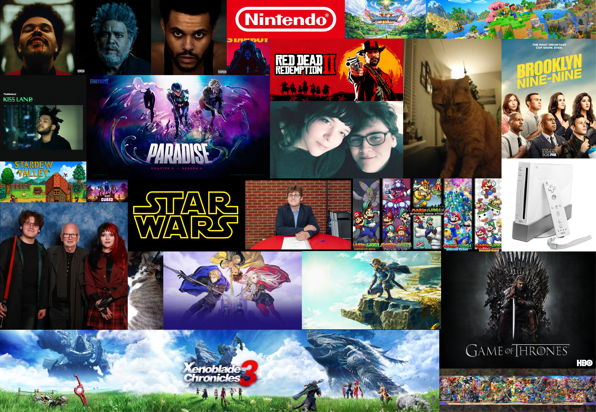
Moodboard – Combinatie van dingen waar mijn interesses liggen en wat mij mezelf maakt.
Het is belangrijk om mezelf in een project te laten zien omdat het m’n persoonlijkheid, visie en unieke aanpak weerspiegelt. Door mezelf te laten zien, geef je anderen een beter begrip van wie ik ben als professional en hoe ik denk. Dit maakt het werk menselijker en authentieker, wat zorgt voor een sterkere connectie met je publiek.
Daarnaast laat het zien dat je betrokken bent en trots bent op wat je hebt gecreëerd, wat je geloofwaardigheid en vertrouwen vergroot. Kortom, door jezelf te laten zien, maak je het project meer herkenbaar en krachtiger.
Ik heb in mijn moodboard een aantal verschillende dingen staan zoals mijn favoriete games, series, muziek, mezelf en mijn dierbaren. De reden dat dit belangrijk voor mij is, is omdat ik hiermee ben opgegroeid, en het een grote impact op mij heeft gehad en nog steeds heeft.
Het is door games zoals Xenoblade dat ik geïnspireerd ben geraakt om een game developer te worden en dat ik naar deze opleiding ben gegaan. Die passie wil ik graag in mijn werk terug laten komen. Ik ben erg blij met de keuzes die ik voor mijn portfolio heb gemaakt en wil hierin beschrijven waarom ik voor deze keuzes ben gegaan en hoe ik dat in mijn werk netjes en in mijn eigen stijl heb terug laten komen.
Mijn hoofdpagina
Als je op de site komt, zie je een screenshot van The Eye of Aldhani — dit komt uit de serie Andor. Eerdere iteraties van dit portfolio hadden een image van 3 zwaarden van Xenoblade, alleen was de tekst die je te zien kreeg door deze foto slecht te zien, dus heb ik de foto vervangen.
Ook geeft het de hoofdpagina gelijk een beeld en kom je niet meteen in lappen tekst terecht, maar kijk je eerst naar een rustig plaatje met subtiele kleuren.
Ik sta ook goed achter mijn keuze om een beetje neon-achtige kleuren toe te voegen aan mijn sitebalkjes. Dit is een referentie naar de lightsabers uit Star Wars, en ik vond het een leuk alternatief om toch wat meer kleur te brengen aan mijn donkere kleurenthema.
Ik ben zelf namelijk ook niet echt van veel kleuren, maar om iets op zwart-wit te zetten past dan ook weer niet bij mij. Een beetje kleur op een website maakt het visueel aantrekkelijker en helpt de aandacht van de bezoeker te trekken.
Het zorgt voor een betere gebruikerservaring door een frisse, dynamische uitstraling te geven en bepaalde elementen, zoals knoppen of belangrijke informatie, te benadrukken. Kleur kan ook emoties oproepen en de hele sfeer van de site versterken, waardoor bezoekers langer blijven en zich meer verbonden voelen met de inhoud.
Verder over mijn keuzes: je ziet niet alleen maar vierkante en rechte vormen. Dit heb ik expres zo gemaakt. Niet alleen vierkante vormen gebruiken op een website zorgt voor variatie en visuele interesse. Door verschillende vormen, zoals ronde of organische lijnen, toe te voegen, wordt de site dynamischer en aantrekkelijker.
Het breekt de strakke, rechte lijnen en maakt de site speelser en minder saai. Dit helpt om de aandacht vast te houden en de algehele esthetiek van de site te verbeteren.
Zelf ben ik ook nog bezig geweest met andere designs, voor bijvoorbeeld de pagina's van de projecten die ik gemaakt heb gedurende semester 2, de style waarmee ik deze projecten presenteer is allemaal gebaseerd op dingen die ik leuk vind., de manier van presenteren volgt allemaal ongeveer hetzelfde format (behalve bij het persoonlijke project) maar toch net anders vormgegeven.
Projectstijlen
De styling van de Branding Project pagina heb ik gebaseerd op het 'After Hours' Album van The Weeknd, omdat het mijn favoriete album aller tijden is, het leek me ook passend om mijn portfolio te stylen na dingen waar ik persoonlijk een connectie heb.

Branding Project – Geïnspireerd het After Hours album van The Weeknd
Voor de stijl van de Create-That-UX projectpagina heb ik me laten inspireren door Dawn FM, het album van The Weeknd. Ik wilde dat de look & feel van de pagina een beetje datzelfde gevoel opriep. Niet te druk, maar wel met karakter. Omdat ik voor andere projecten ook eerder albums van The Weeknd als inspiratie heb gebruikt, en zijn muziek een goot deel is van wie ik ben, leek het leuk om hierop door te gaan.

UX Project – Geïnspireerd op het Dawn FM album van The Weeknd
Voor het design van de Development project pagina heb ik gekozen om het color palette van de alt cover van The Weeknd zijn album Hurry Up Tomorrow te gebruiken omdat ik de voorgaande projectpaginas de albums After Hours en Dawn FM gebruikt heb voor het design en omdat dit album de laatste is in de trilogie leek het me goed passen om dit album als inspiratie te gebruiken.
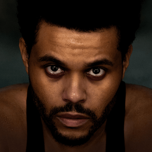
Development Project – Geïnspireerd op het Hurry Up Tomorrow album van The Weeknd
De look van mijn persoonlijke project is gebaseerd op de Wii interface: clean, vriendelijk en licht. Veel witruimte, afgeronde hoeken en zachte grijstinten. Het moest voelen als thuiskomen, makkelijk te navigeren, en simpel maar effectief. De nostalgische verwijzing naar het Wii-menu gaf het geheel een persoonlijke touch die goed past bij het idee van een eigen project. Het past er voornamelijk bij omdat mijn persoonlijke project ook een game is.
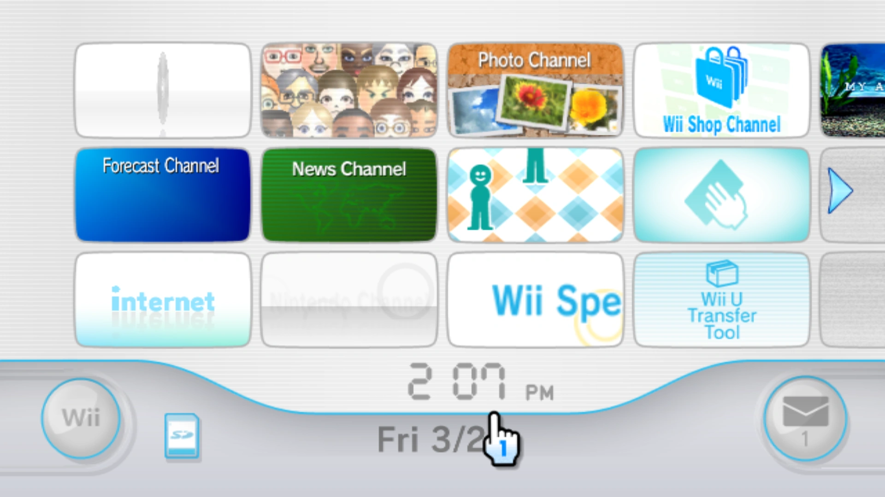
Persoonlijk Project – Wii-stijl interface
Toelichting op Designkeuzes
Voor de Projectenpagina heb ik gekozen voor neon-achtige kleuren, geïnspireerd op bekende lightsaber-kleuren uit Star Wars. Deze kleuren sluiten goed aan bij de mysterieuze, sci-fi stijl van de rest van mijn portfolio. Daarnaast heb ik een eenvoudige 2x2 grid toegepast zodat gebruikers snel en intuïtief projecten kunnen aanklikken.
De Branding Projectpagina is visueel gebaseerd op het album After Hours van The Weeknd. Dit vond ik passend omdat het brandingproject draait om de artiest Boris Schmidt. De sfeer van het album klikte goed met de uitstraling die ik voor deze pagina wilde bereiken.
Voor de Create That UX projectpagina heb ik de stijl gebaseerd op het album Dawn FM, eveneens van The Weeknd. In eerste instantie had ik deze pagina willen stylen rond Game of Thrones (één van mijn favoriete series), maar die richting sloot uiteindelijk niet goed aan bij mijn portfolio. Omdat Dawn FM het tweede album is in een trilogie die begint met After Hours, voelde dit als de meest logische visuele opvolger.
De Development Projectpagina is gestyled op basis van de alternative cover van het album Hurry Up Tomorrow van The Weeknd. Aangezien dit album het slotstuk vormt in dezelfde trilogie, vond ik het visueel en thematisch een mooie afsluiter van de reeks stijlen die ik heb toegepast op de verschillende projecten.
De projectenpagina’s zelf volgen een eenvoudig, overzichtelijk format dat de informatie duidelijk presenteert. Bij het brandingproject zie je dat ik nog aan het begin stond van mijn ontwikkeling, terwijl bij het Create That UX-project duidelijker wordt dat ik inmiddels meer ervaring heb opgedaan — wat je terugziet in het ontwerp.
Zowel de Over dit Portfolio als de Over Mij pagina’s zijn ook gebaseerd op albums van The Weeknd. Voor de "Over dit Portfolio"-pagina heb ik Kiss Land als inspiratie gebruikt, en de "Over Mij"-pagina is gebaseerd op het Starboy album. Aangezien ik toch bezig was met het doortrekken van stijlen, vond ik het een leuk idee om álle pagina’s op albums te baseren.
Zowel de Over dit Portfolio als de Over Mij pagina’s zijn ook gebaseerd op albums van The Weeknd. Voor de "Over dit Portfolio"-pagina heb ik Kiss Land als inspiratie gebruikt, en de "Over Mij"-pagina is gebaseerd op het Starboy album. Aangezien ik toch bezig was met het doortrekken van stijlen, vond ik het een leuk idee om álle pagina’s op albums te baseren.
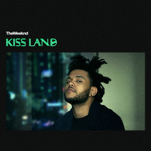
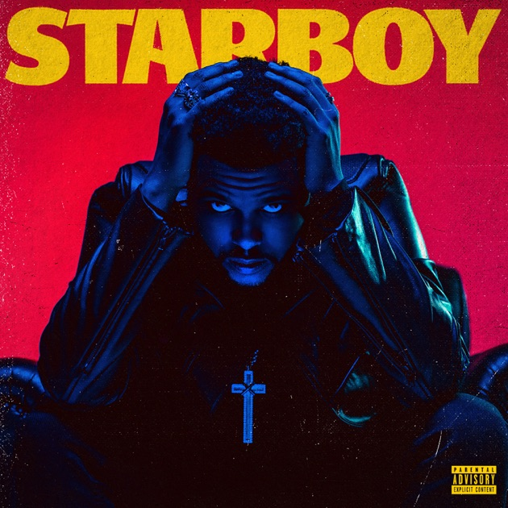
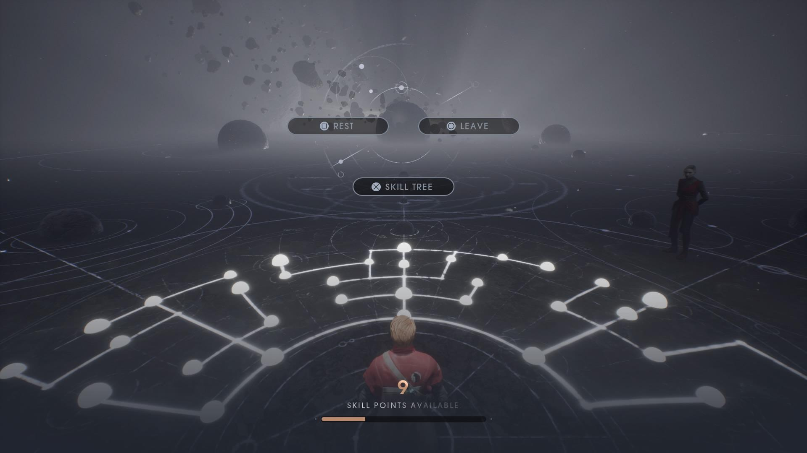
Inspiratiebronnen
Voor het ontwerp van mijn portfolio heb ik inspiratie gehaald uit verschillende websites en creatieve platforms die zowel visueel aantrekkelijk zijn als een sterke identiteit uitstralen. Eén van de belangrijkste inspiratiebronnen voor mij waren websites van gamebedrijven zoals Nintendo en PlayStation. Deze sites maken gebruik van krachtige visuals, duidelijke thema’s en subtiele animaties die een verhaal vertellen zonder meteen in lappen tekst te vervallen. Dit sluit perfect aan op mijn keuze om mijn homepagina rustig te houden met een betekenisvolle afbeelding in plaats van een tekstmuur.
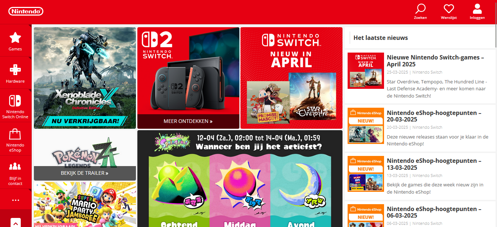
Nintendo – Gebruik van visuele storytelling + buttons
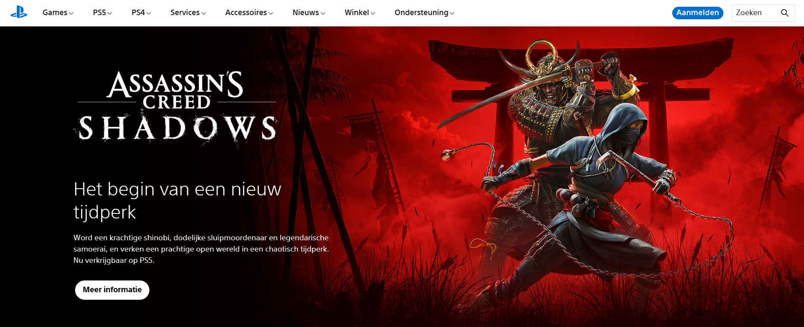
Playstation – Nette uitstraling, grote image als eerste wat je opvalt
Verder vond ik inspiratie bij artiestensites zoals die van The Weeknd en Travis Scott, waarin sfeer, kleurgebruik en visuele identiteit centraal staan. Hoewel sommige van die websites heel experimenteel en abstract zijn, heb ik juist geleerd waar mijn grenzen liggen: ik wilde iets unieks, maar wel iets dat bij mij past en functioneel blijft.
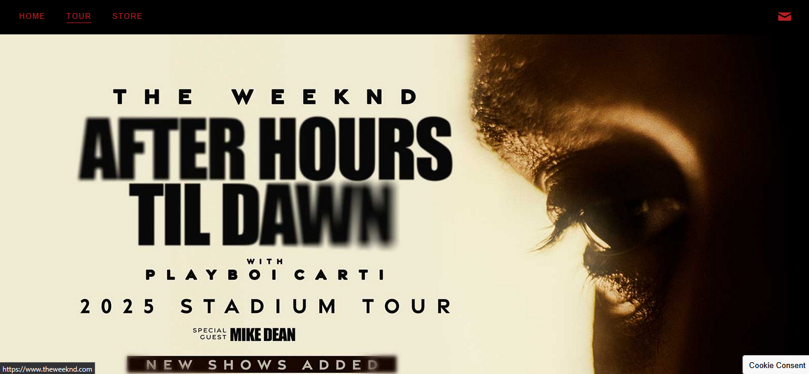
The Weeknd – Veel info, abstracte layout.

Travis Scott – Abstract, minimalistisch design.
Tot slot heb ik ook elementen overgenomen uit websites zoals die van Apple, vooral het gebruik van ruimte, structuur en een cleane presentatie van informatie. Dat hielp me om een balans te vinden tussen mijn creatieve kant en de duidelijkheid die een portfolio nodig heeft om goed over te komen bij een bezoeker.
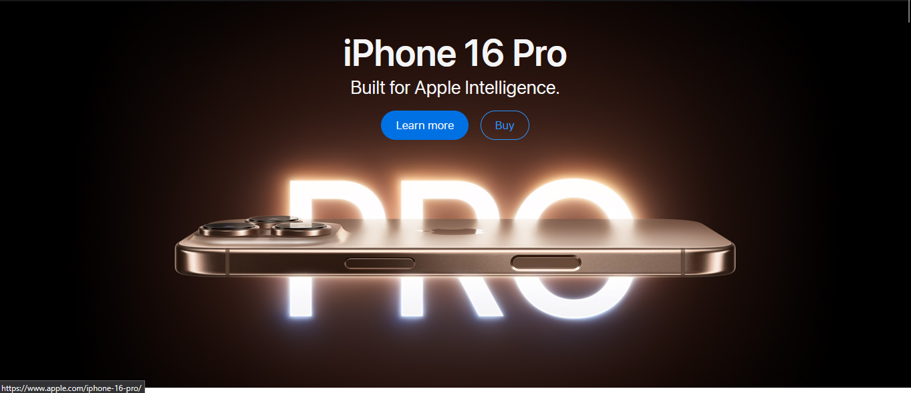
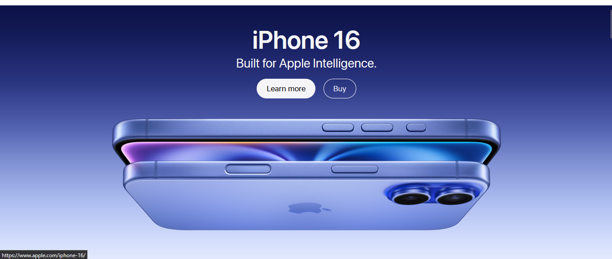
Apple – Clean en gestructureerd design
Wat dit portfolio voor mij betekent
Dit is meer dan een verzameling schoolopdrachten. Het is mijn digitale visitekaartje, een plek waar ik mijn ontwikkeling laat zien, maar ook mijn ambities. Elk project heeft me iets geleerd — over design, over gebruikers, maar ook over mezelf.